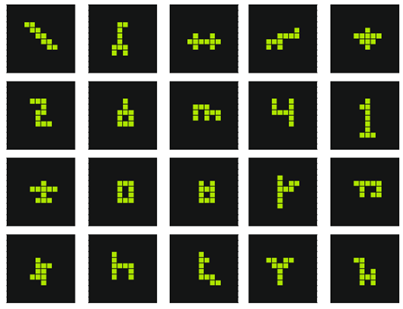

<!DOCTYPE html>
<html lang="en">
  <head>
    <title>Image ratings</title>
    <meta name="viewport" content="width=device-width, initial-scale=1">
    <script src="js/jsPsych.js"></script>
    <script src="js/conf.js?2022-07-23-1810"></script>
    <script src="js/nouislider.min.js"></script>
    <script src="js/plugin-html-keyboard-response.js"></script>
    <script src="js/plugin-html-button-response.js"></script>
    <script src="js/plugin-call-function.js"></script>
    <script src="js/plugin-survey.browser.min.js"></script>
    <script src="js/popper.min.js"></script>
    <script src="js/tippy-bundle.umd.min.js"></script>
    <!-- <script src="js/Tooltip.js" type="text/javascript"></script> -->
    <link rel="stylesheet" href="css/jspsych.css" />
    <link rel="stylesheet" href="css/survey.css">
    <link rel="stylesheet" href="css/plugin-survey.css">
    <link href="css/nouislider.min.css" rel="stylesheet" type="text/css" />
    <link href="css/prolific.css?2022-07-23-1834" rel="stylesheet" type="text/css" />
  </head>
  <body>
  <script>
    function shuffle(array) {
      let currentIndex = array.length,  randomIndex;

      // While there remain elements to shuffle.
      while (currentIndex != 0) {

        // Pick a remaining element.
        randomIndex = Math.floor(Math.random() * currentIndex);
        currentIndex--;

        // And swap it with the current element.
        [array[currentIndex], array[randomIndex]] = [
          array[randomIndex], array[currentIndex]];
      }

      return array;
    }
    // Prepare JsPsych
    var jsPsych = initJsPsych({
      show_progress_bar: true,
      auto_update_progress_bar: false,
      on_finish: function() {
        // perhaps revisit this and handle with backend instead of jspsych
        window.location = prolificURL + prolificID;
      },
    });

    // Callback to save save results to backend.
    var save_response = function(data) {
      var xhr = new XMLHttpRequest();
      xhr.open('POST', 'lib/save_response.php');
      xhr.setRequestHeader('Content-Type', 'application/json');
      xhr.send(JSON.stringify(data));
    }

    /*****************
     * Slider setup
     *****************/

    var slider_default = {
      class: "slider-response",
      tooltips: [{
        to: function (value) {
          return Math.round(value);
        },
        from: function (value) {
          return value;
        }
      }],
      range: {min: [1], max: [100]},
      pips: {
        mode: 'values',
        values: [1, 25, 50, 75, 100],
        density: 1
      },
      start: [50],
      step: 1
    };

    var slider_prefix = "slider_";

    var labels_creative = {
      1: '1 (not creative)',
      100: '100 (very creative)'
    };
    var labels_creative_values = {
      
    };
    labels_creative_values[labels_creative[1]] = 1;
    labels_creative_values[labels_creative[100]] = 100;

    var labels_abstract = {
      1: '1 (abstract)',
      50: '50 (uncertain)',
      100: '100 (concrete)'
    };
    var labels_abstract_values = {
      
    };
    labels_abstract_values[labels_abstract[1]] = 1;
    labels_abstract_values[labels_abstract[50]] = 50;
    labels_abstract_values[labels_abstract[100]] = 100;

    var labels_symmetric = {
      1: '1 (asymmetrical)',
      100: '100 (symmetrical)'
    };
    var labels_symmetric_values = {
      
    };
    labels_symmetric_values[labels_symmetric[1]] = 1;
    labels_symmetric_values[labels_symmetric[50]] = 50;
    labels_symmetric_values[labels_symmetric[100]] = 100;

    var slider_pip_formatter = function (labels, lable_values) {
      return {
        to: function (value) {
          var intval = Math.round(value);
          
          if (labels[intval]) {
            return labels[intval];
          } else {
            return intval;
          }
        },
        from: function (value) {
          if (lable_values[value]) {
            return lable_values[value];
          } else {
            return value;
          }
        }
      };
    };

    var sliders = {
      ordered: [
        {
          name: slider_prefix + "creative",
          prompt: "How creative do you think this image is?",
          help: "<b>how creative you find the figure</b> on a scale from 1 to 100, where 1 is <u>not creative</u> and 100 is <u>very creative</u>.",
          pips: {
            ...slider_default['pips'],
            format: slider_pip_formatter(labels_creative, labels_creative_values)
          }
        },
        {
          name: slider_prefix + "abstract",
          prompt: "How certain are you this image represents something concrete?",
          help: "<b>how likely you find the figure to be intended to resemble something</b>, the middle value 50 indicates that you are <u>very uncertain</u>. 1 indicates that you are <u>certain that the shape is abstract</u> and does not resemble anything particular. 100 indicates that you are <u>certain that the figure resembles something concrete</u> that you could potentially name (like e.g. an object, animal or letter)",
          pips: {
            ...slider_default['pips'],
            format: slider_pip_formatter(labels_abstract, labels_abstract_values)
          }
        },
        {
          type: "html",
          name: slider_prefix + "symmetric",
          prompt: "How symmetrical is this image?",
          help: "<b>how symmetric you find the figure</b> on a scale from 1 to 100, where 1 indicates that the figure is <u>not symmetric at all</u>, and 100 means that it is <u>perfectly symmetric</u>.",
          pips: {
            ...slider_default['pips'],
            format: slider_pip_formatter(labels_symmetric, labels_symmetric_values)
          }
        },
      ],
      named: {}
    };

    var form_sliders = [];

    for(i = 0; i < sliders.ordered.length; i++) {
      sliders.named[sliders.ordered[i].name] = {
        ...slider_default,
        ...sliders.ordered[i]
      };

      form_sliders[i] = {
        type: "html",
        prompt: '<span>' + sliders.ordered[i].prompt + '</span> <span class="rating-help" id="help-' + sliders.ordered[i].name + '">?</span><div id="' + sliders.ordered[i].name + '" class="' + slider_default.class + '"></div>',
        name: sliders.ordered[i].name
      };

    }

    var createSlider = function(el_id, wrapperEl, onChange) {
      var slider_class = sliders.named[el_id].class;
      var slider_tooltips = sliders.named[el_id].tooltips;
      var slider_range = sliders.named[el_id].range;
      var slider_pips = sliders.named[el_id].pips;
      var slider_start = sliders.named[el_id].start;
      var slider_step = sliders.named[el_id].step;
      var slider_help = sliders.named[el_id].help;
      var el_selector = '#' + el_id;
      var help_selector = '#help-' + el_id;

      var sliderRating = wrapperEl.querySelector(el_selector);

      noUiSlider.create(sliderRating, {
        start: slider_start,
        step: slider_step,
        range: slider_range,
        tooltips: slider_tooltips,
        pips: slider_pips
      });

      sliderRating.noUiSlider.on('update', function (values, handle) {
        var val = Math.round(values[handle]);
        // add the updated value to the trial's data
        jsPsych.getCurrentTrial().data[el_id] = val;
        
      });
      sliderRating.noUiSlider.on('change', function (values, handle) {
        // call the onChange function to indicate slider has been interacted with.
        onChange(sliderRating);
      });

      // create tooltip help
      for(i = 0; i < sliders.ordered.length; i++) {
      tippy(help_selector, {
        content: slider_help,
        allowHTML: true,
        trigger: 'mouseenter click',
      });
    }
      return sliderRating;
    };

    /*****************
     * END Slider setup
     *****************/


    // capture info from Prolific
    var subject_id = jsPsych.data.getURLVariable('PROLIFIC_PID');
    var study_id = jsPsych.data.getURLVariable('STUDY_ID');
    var session_id = jsPsych.data.getURLVariable('SESSION_ID');
    
    // Add Prolific info to data
    jsPsych.data.addProperties({
      subject_id: subject_id,
      study_id: study_id,
      session_id: session_id
    });

    /* create timeline */
    var timeline = [];


    var addImageTrials = async function(images) {
      var prompt_images = images[0];
      var check_images = images[1];
      var check_interval = images[2];

      if (prompt_images.length < 1) {
          const error_page = {
            type: jsPsychHtmlKeyboardResponse,
            stimulus: 'You have already rated all the images, thank you.',
            on_start: function() {
              jsPsych.setProgressBar(1);
            }
          }
          timeline.push(error_page);
          return;
        }
        var preambles = [];
        var n_images = prompt_images.length;
        var n_checks = check_images.length;
        for (var i = 0; i < n_images; i++) {
          preambles.push({
            pages: 
            [
              [
                {type: "html", prompt: ''},
                ...form_sliders
              ]
            ],
            data: {
              prompt_id: prompt_images[i]['prompt_id'],
              user_prompt_id: prompt_images[i]['user_prompt_id'],
            },
          });
          // add optional attn checks
          if (check_images.length > 0) {
            var n = i + 1;
            if (n == n_images || n % check_interval == 0) {
              var check_image_choices = check_images.pop();
              check_image_choices.push(prompt_images[i]);
              shuffle(check_image_choices);
              var survey_prompt = "";
              check_image_choice_ids = [];
              for (var j = 0; j < check_image_choices.length; j++) {
                survey_prompt += '<div class="check-option">';
                survey_prompt += '<div class="check-option-image"><label for="' + check_image_choices[j]['prompt_id'] + '">';
                survey_prompt += '';
                survey_prompt += '</label></div>';
                survey_prompt += '<div class="check-option-input"><input type="radio" name="check_image_choice" value="' + check_image_choices[j]['prompt_id'] + '" id="' + check_image_choices[j]['prompt_id'] + '">';
                survey_prompt += '</div></div>';
                
                check_image_choice_ids.push(check_image_choices[j]['prompt_id']);
              }
              preambles.push({
                pages: 
                [
                  [
                    {type: "html", prompt: 'Please select which of the following images was the one you just rated.', name: 'check-prompt'},
                    {
                      type: "html",
                      prompt: '<div class="check-options">' + survey_prompt + '</div><div id="check-options-error"></div>',
                      name: 'check-image-list',
                    }
                  ]
                ],
                data: {
                  prompt_id: prompt_images[i]['prompt_id'],
                  check_prompt_ids: check_image_choice_ids,
                },
              });
            }
          }
        }

        var slider_els = [];
        // to prevent the event handler from being called twice
        var surveyInitialized = false;
        var questionsInitialized = false;
        var completedButton;
        var completedButtonClass;

        var image_trials = {
          type: jsPsychSurvey,
          timeline: preambles,
          button_label_finish: "Continue",
          on_render_survey_complete: function(sender, options) {
            // initialize the survey
            if (!surveyInitialized) {
              completedButtonClass = sender.cssValue.navigation.complete;
              completedButton = sender.renderedElement.getElementsByClassName(completedButtonClass)[0];
              completedButton.disabled = true;
              surveyInitialized = true;
            }
          },
          on_render_question_complete: function(sender, options) {
            // only deal with sliders
            if (options.question.name.startsWith(slider_prefix)) {
              if (!questionsInitialized) {
                // add a onCompleting event handler to prevent survey from submitting
                // if any sliders have not yet been changed (or at least clicked).
                sender.onCompleting.add(function (sender, options) {
                  if(slider_els.length > 0) {
                    options.allowComplete = false;
                  }
                });
                questionsInitialized = true;
              }

              // create slider
              var slider = createSlider(options.question.name, options.htmlElement, function(curSlider) {
                // on change, remove it from the list of sliders
                for (var i = 0; i < slider_els.length; i++) {
                  if (slider_els[i] == curSlider) {
                    slider_els.splice(i, 1);
                    // deregister the slider's onChange event handler.
                    curSlider.noUiSlider.off('change');
                    break;
                  }
                }
                if (slider_els.length == 0) {
                  completedButton.disabled = false;
                }
              });
              // add the slider to the list of sliders
              slider_els.push(slider);
            }

            // handle checks
            if (options.question.name.startsWith('check-prompt')) {
              completedButtonClass = sender.cssValue.navigation.complete;
              completedButton = sender.renderedElement.getElementsByClassName(completedButtonClass)[0];
              completedButton.disabled = false;
              sender.onCompleting.add(function (sender, options) {
                var checkRadio = sender.renderedElement.querySelector('input[name="check_image_choice"]:checked');
                
                if(checkRadio == null) {
                  options.allowComplete = false;
                  sender.renderedElement.querySelector("#check-options-error").innerHTML = "Please select an image.";
                } else {
                  jsPsych.getCurrentTrial().data['check_response_id'] = checkRadio.value;
                }
              });
            }
          },
          on_finish: function(data) {
            var curr_progress_bar_value = jsPsych.getProgressBarCompleted();
            surveyInitialized = false;
            questionsInitialized = false;
            slider_els = [];
            jsPsych.setProgressBar(curr_progress_bar_value + (1/(n_images + 2 + n_checks)));
            save_response(data);
          }
          
        }
        const consent_page = {
          type: jsPsychHtmlButtonResponse,
          stimulus: consent_text,
          choices: ['Next'],
          on_start: function() {
            jsPsych.setProgressBar(0);
          }
        }
        const welcome_page = {
          type: jsPsychHtmlButtonResponse,
          stimulus: '<div style="text-align: left;"><h2>Task instructions</h2><div>In the following, you will be presented with '+ n_images +' simple figures one-by-one. All figures consist of 10 small green squares on black background (see some examples of figures below).</div>' +
          '' +
          '<div>Your task is, for each figure, to rate them for three different properties. Please read through the explanation of the three rating scales very carefully until you feel you have a good understanding of what you are supposed to do.</div>' +
          '<ol class="custom-list-marker custom-list-numeric-par">' +
          '<li>First, you will rate <b>how creative you find the figure</b> on a scale from 1 to 100, where 1 is <u>not creative</u> and 100 is <u>very creative</u>. Remember that all figures are produced from the same 10 green tiles and have to stay connected in one shape. The relative creativity of a figure should be assessed from this constraint. A creative figure could be one that you find <b>surprising and interesting</b> relative to other figures.</li>' +
          '<li>Next, you will rate their concreteness/abstractness, that is <b>how likely you find the figure to be intended to resemble something</b>. Some figures might be made purposefully to look like something particular, for instance an animal, an airplane, or a letter. Others might be abstract shapes that are not intended to look like something particular, but are interesting on their own, for instance a strange geometrical shape. The scale reflects how certain you are if the figure is one or the other. The middle value 50 indicates that you are <u>very uncertain</u>. 1 indicates that you are <u>certain that the shape is abstract</u> and does not resemble anything particular. 100 indicates that you are <u>certain that the figure resembles something concrete</u> that you could potentially name (like e.g. an object, animal or letter).</li>' +
          '<li>Last, you will rate <b>how symmetric you find the figure</b> on a scale from 1 to 100, where 1 indicates that the figure is <u>not symmetric at all</u>, and 100 means that it is <u>perfectly symmetric</u>. Notice, that symmetry can be relative to one or more symmetry lines. A figure can be the perfect mirror of itself either horizontally, vertically or diagonally. It can also have more than one symmetry line. You can also have figures that show imperfect symmetry (close to be symmetric) or that have no symmetry at all.</li>' +
          '</ol>' +
          '<div>The rating is self-paced. That is, you can use all the time you want to inspect the figure before you make a rating on each of the three scales (creativity, concreteness and symmetry). If you would like to return to the explanations of the rating scales later during the task, you can hover over the <span class="rating-help">?</span> symbol next to each of the rating scales. </div>' +
          '</div>',
          choices: ['Next'],
          on_start: function() {
            jsPsych.setProgressBar(0);
          },
          on_finish: function(data) {
            var curr_progress_bar_value = jsPsych.getProgressBarCompleted();
            jsPsych.setProgressBar(curr_progress_bar_value + (1/(n_images + 1)));
          }
        }
        timeline.push(consent_page);
        timeline.push(welcome_page);
        timeline.push(image_trials);

        const thankyou_page = {
          type: jsPsychHtmlButtonResponse,
          stimulus: '<div>' +
                    '<h2>The experiment is done. Thank you for your participation!</h2>' +
                    '<p>If you are interested in our research on creativity you can read more here:</p>' +
                    '<p><a href="https://escholarship.org/uc/item/9p3276dt" target="_blank">Rosenberg, M., Gordon, G., Noy, L., & Tylen, K. (2022). Social Interaction Dynamics Modulates Collective Creativity. In Proceedings of the Annual Meeting of the Cognitive Science Society (Vol. 44, No. 44).</a></p>' +
                    '<p><a href="https://journals.plos.org/plosone/article?id=10.1371/journal.pone.0182133" target="_blank">Hart, Y., Mayo, A. E., Mayo, R., Rozenkrantz, L., Tendler, A., Alon, U., & Noy, L. (2017). Creative foraging: An experimental paradigm for studying exploration and discovery. PloS one, 12(8), e0182133.</a></p>' +
                    '<p>If you have questions about the study or your participation, you are welcome to contact Kristian Tylén (<a href="mailto:kristian@cc.au.dk">kristian@cc.au.dk</a>).</p>' +
                    '</div>',
          choices: ['Finish'],
          on_start: function() {
            jsPsych.setProgressBar(0);
          }
        }

        timeline.push(thankyou_page);
        
        
    };

    var init_survey = async function ()  {
      const options = {
            method: 'POST',
            body: JSON.stringify(jsPsych.data.dataProperties),
            headers: {
                'Content-Type': 'application/json'
            }
        }

        fetch('lib/get_survey_list.php', options)
        .then(res => res.json())
        .then(res => {
          addImageTrials(res).then(runTrials);
        }).catch(err => {
          addImageTrials([[], []]).then(runTrials);
          console.log(err);
        });
    }
    
    runTrials = function () {
      var saveResults = {
      type: jsPsychCallFunction,
      async: true,
      func: function(done){
          var xhr = new XMLHttpRequest();
          xhr.open('POST', 'lib/save.php');
          xhr.setRequestHeader('Content-Type', 'application/json');
          xhr.onload = function() {
            done();
          };
          xhr.send(JSON.stringify({filedata: jsPsych.data.get().csv()}));
        }
      }
      timeline.push(saveResults);

      jsPsych.run(timeline);
    }

    init_survey();
    
  </script>
</body>
</html>